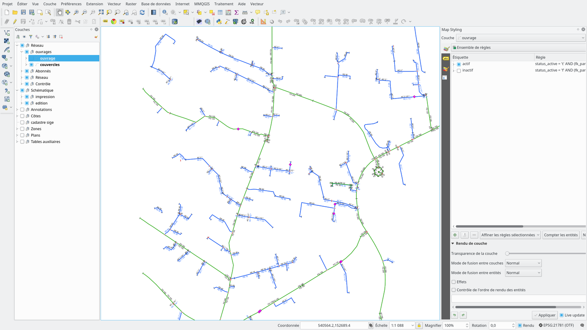

7. Ukázková data a projekt
QWAT lze testovat stažením úložiště projektu QGS zde a obnovením nejnovějšího data_and_structure_sample.backup v PostgreSQL (+ rozšíření PostGIS a hstore).
Na stránce stahování najdete tyto zálohy:
qwat_vX.X.X_data_and_structure_sample.backup: Obnovení schématu QWAT plus ukázkový dataset
qwat_vX.X.X_structure_only.backup: Obnoví pouze schéma QWAT. Kromě toho budete také muset obnovit dump value_list_data_only
qwat_vX.X.X_value_list_data_only.backup: Obnovení seznamu hodnot demo projektu QWAT
qwat_vX.X.X_data_only_sample.backup: Obnovení vzorového datového souboru (skript init_qwat.sh by měl být spuštěn před obnovením vzorového datového souboru)
Podrobnější pokyny:
Jak nainstalovat vzorek dat z projektu QWAT Water Distribution Management.
Vytvořte databázový model QWAT pomocí rolí a obnovte nejnovější verzi:
# Create the database and the extensions
psql -U postgres -c 'create database qwat;'
psql -U postgres -d qwat -c 'create extension postgis;'
psql -U postgres -d qwat -c 'create extension hstore;'
# Create the roles for QWAT
psql -c 'CREATE ROLE qwat_viewer NOSUPERUSER INHERIT NOCREATEDB NOCREATEROLE NOREPLICATION;' -U postgres
psql -c 'CREATE ROLE qwat_user NOSUPERUSER INHERIT NOCREATEDB NOCREATEROLE NOREPLICATION;' -U postgres
psql -c 'CREATE ROLE qwat_manager NOSUPERUSER INHERIT NOCREATEDB NOCREATEROLE NOREPLICATION;' -U postgres
psql -c 'CREATE ROLE qwat_sysadmin NOSUPERUSER INHERIT NOCREATEDB NOCREATEROLE NOREPLICATION;' -U postgres
# And restore it into your QWAT database
pg_restore -U postgres --dbname qwat -e --no-owner --verbose --jobs=3 --disable-triggers --port 5432 qwat_dump.backup
Nyní máte nejnovější datový model (s ukázkovými daty) + databázové role.
Vytvořte službu QWAT v souboru .pg_service.conf
Pokud již máte službu definovanou, můžete tento krok přeskočit, jinak upravte soubor .pg_service.conf a nechte jej vypadat takto:
[qwat]
#enter your database ip
host=127.0.0.1
#database name
dbname=qwat
port=5432
user=postgres
#you can also add your password if you like
password=YourPassword
[qwat_prod]
#enter your database ip
host=127.0.0.1
#database name
dbname=qwat
port=5432
user=postgres
#you can also add your password if you like
password=YourPassword
Otevřete projekt qgis
Projekt qwat.qgs můžete otevřít z adresáře qwat-data-sample a měla by se zobrazit tato obrazovka:
Poznámka
Můžete také vyzkoušet nejnovější projekt qwat.qgs z adresáře QWAT. Mějte na paměti, že existuje šance, že se nehodí do vzorového datového modelu. Důvodem je, že vzorový datový model může být o něco starší než nejnovější datový model a odpovídá pouze odpovídajícímu projektu .qgs.